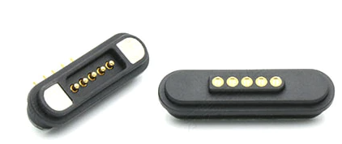
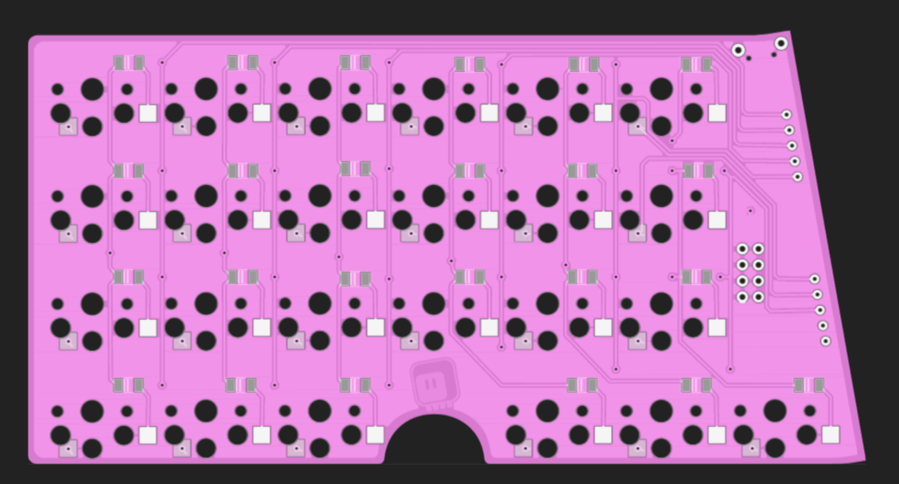
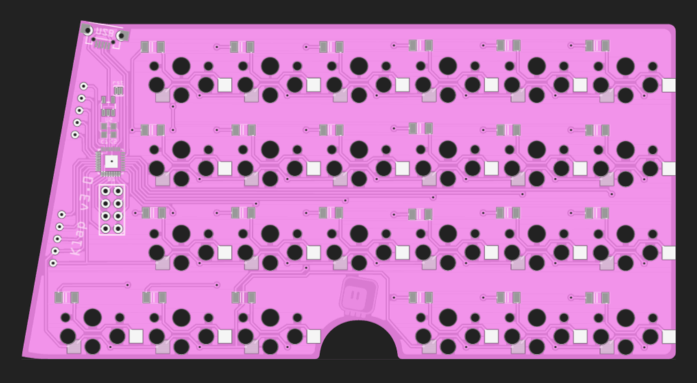

Magnets¶
Published on 2022-03-20 in Klap Keyboard.
Since I have to make one more version of this, because version two had so many mistakes, I thought I will look a little bit at what connectors could be used, and I found this:
It’s basically pogo pins and magnets. This particular one has five pins and is mounted at a right angle, so it seems perfect for my needs if I used two pairs of them. So I fixed the problems with the previous PCB, and made this:
 I had to remove two keys on each half in order to get down to only 10 lines between the halves (4 rows, 6 columns), but otherwise it’s very similar to version two. I’m not entirely sure about the dimensions of those connectors, so I left ample room around them — we will see how they work once they arrive. I’m probably not going to use an actual pink PCB, though.
I also broke out six of unused microcontroller pins (and the power), so I might try doing some modules again.